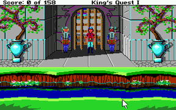
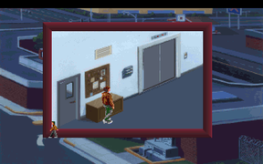
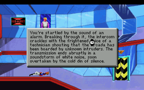
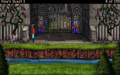

Sierra Klassiker
Dieser Artikel wurde für die folgenden Ubuntu-Versionen getestet:
Ubuntu 14.04 Trusty Tahr
Zum Verständnis dieses Artikels sind folgende Seiten hilfreich:
Sierra Entertainment, Inc.  (bis 1998: Sierra On-Line) war ein Computerspiele-Entwicklungs- und Vertriebsunternehmen, welches eine Vielzahl von Adventure-Klassikern hervorgebracht hat - zuerst in EGA-Grafik und mit einem Textparser. Einige der Spiele wurden mit VGA-Grafik, Soundkarten-Unterstützung und einer Point-and-Click-Bedienung später neu veröffentlicht.
(bis 1998: Sierra On-Line) war ein Computerspiele-Entwicklungs- und Vertriebsunternehmen, welches eine Vielzahl von Adventure-Klassikern hervorgebracht hat - zuerst in EGA-Grafik und mit einem Textparser. Einige der Spiele wurden mit VGA-Grafik, Soundkarten-Unterstützung und einer Point-and-Click-Bedienung später neu veröffentlicht.
|  |
| King's Quest |
|  |
| Police Quest |
|  |
| Space Quest |
Zur erfolgreichen Reihe zählen unter anderem die Titel:
Diese sind im Rahmen einer "Classic Collection" für Windows erhältlich. Die CDs enthalten neben den Spielen das Programm DOSBox, den offiziellen Emulator für Sierra Compilations, mit dem die Spiele unter Windows gestartet werden können.
Installation¶
Um die auf CD enthaltenen Spiele unter Ubuntu nutzen zu können, muss man zuerst Wine nutzen, da die auf dem Medium enthaltenen Cabinet-Dateien von unshield nicht verarbeitet werden können.
Einen Ordner mit dem Spieletitel erstellen z.B. KQ. Im folgenden Basisordner genannt.
In den Basisordner alle Dateien von der CD / den CDs kopieren.
Die Datei setup.exe im Basisordner mit Wine aufrufen und die Installation [1] starten.
Nach dem Ablauf der Installationsroutine findet man die Spiele im Homeverzeichnis unter ~/.wine/drive_c/Programme/Sierra/ gefolgt vom Titel der Kollektion z.B. Kings Quest Collection(TM).
Spiel¶
Im jeweiligen Installationsordner findet man nun die benötigten Spieledateien, um sie mit DOSBox [2] oder ScummVM [3] nutzen zu können. Die Ordner (z.B. kq1sci, kg2, kq3, kq4, kq5, kq6 und kq7) eventuell in einen anderen Ordner kopieren und ggf. auf ein anderes Medium sichern. Ebenfalls das jeweilige Handbuch, welches als PDF vorliegt, kopieren. Dieses wird für den Kopierschutz benötigt.
ScummVM¶
Welches Spiel von ScummVM derzeit unterstützt wird, entnimmt man der Projektseite .
Hinweis:
Die SCI-Versionen von King's Quest: Quest for the Crown, Space Quest I: The Sarien Encounter und Police Quest: In Pursuit of the Death Angel können nur mit einer aktuellen Version von ScummVM genutzt werden.
|  |
| Remake |
Remakes¶
AGD Interactive ist eine Non-Profit-Organisation, welche Remakes einiger King's Quest Spiele produziert hat. Neben King's Quest I , King's Quest II: Romancing the Stones und King's Quest III: To Heir Is Human steht Quest for Glory II zum Download bereit. Um die Spiele unter Linux nutzen zu können muß Wine [4] installiert sein. Zur Installation die jeweilige .exe-Datei aufrufen und den Installationsanweisungen folgen. Nach erfolgreicher Installation kann das Spiel über das Menü gestartet werden. Im jeweiligen Installationspfad ist ein Handbuch zu finden.
Online¶
Auf der Seite Sarien.net können einige der Klassiker im Browser (auch als Multiplayer) gespielt werden. Eine Anleitung erleichtert den Einstieg in das jeweilige Spiel.
Infobox¶
| King's Quest | |
| Genre: | Adventure |
| Sprache: | |
| Veröffentlichung: | 1984 (Remake 1990) / 1985 / 1986 / 1988 / 1990 / 1992 / 1994 |
| Publisher: | Sierra On-Line |
| Systemvoraussetzungen: | 486er, VGA-Grafikkarte, Soundkarte, 8 MB RAM |
| Medien: | CD (2) |
| Strichcode / EAN / GTIN: | 8716051013082 |
| Läuft mit: | DOSBox und ScummVM |
| Police Quest | |
| Genre: | Adventure |
| Sprache: | |
| Veröffentlichung: | 1987 (Remake 1992) / 1988 / 1991 / 1993 |
| Publisher: | Sierra On-Line |
| Systemvoraussetzungen: | 386er, VGA-Grafikkarte, Soundkarte, 4 MB RAM |
| Medien: | CD (2) |
| Strichcode / EAN / GTIN: | 3348542212077 |
| Läuft mit: | DOSBox und ScummVM |
| Space Quest | |
| Genre: | Adventure |
| Sprache: | |
| Veröffentlichung: | 1986 (Remake 1992) / 1987 / 1989 / 1991 / 1993 / 1995 |
| Publisher: | Sierra On-Line |
| Systemvoraussetzungen: | 486er, VGA-Grafikkarte, Soundkarte, 8 MB RAM |
| Medien: | CD (1) |
| Strichcode / EAN / GTIN: | 3348542211254 |
| Läuft mit: | DOSBox und ScummVM |

- Erstellt mit Inyoka
-
 2004 – 2017 ubuntuusers.de • Einige Rechte vorbehalten
2004 – 2017 ubuntuusers.de • Einige Rechte vorbehalten
Lizenz • Kontakt • Datenschutz • Impressum • Serverstatus -
Serverhousing gespendet von